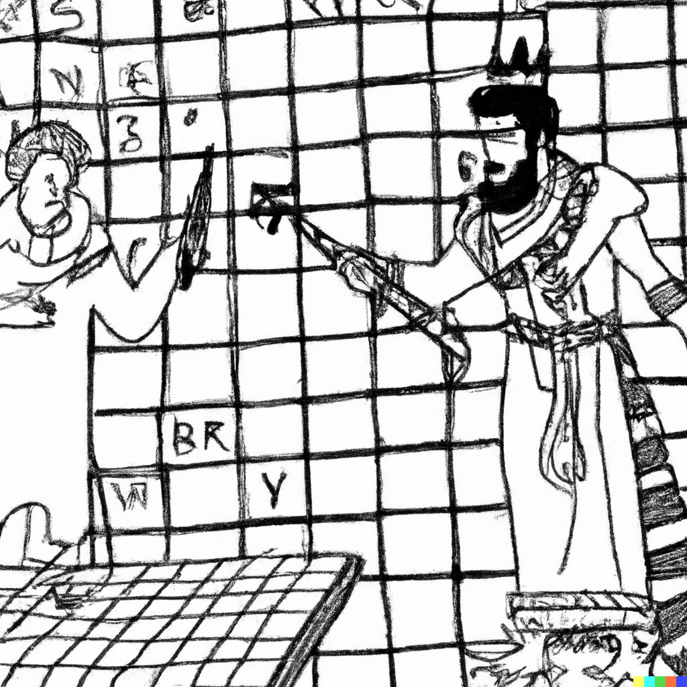

A cryptic crossword clue is a pretty weird thing. It’s a sentence fragment that seems to be saying something, but, upon closer scrutiny, turns out to be saying a completely different thing, and that too in two ways! What’s going on!?
I like to think of it as a conversation between the setter and the solver. The setter picks a grid, fills it with words, and then invents an interesting way to arrive at the sequence of letters in each word. The setter then presents these inventions in plain English to the solver after affixing definitions of the solution words, in a fun way that creates sentence fragments that seem to obfuscate their true intents. The solver takes on each clue and tries to recover its true intent. There is much chuckling on both sides.
|  |
|
Solver Vikram solving a crossword by Setter Betaal
(an AI-generated image by DALL-E).
|
In this playful contract between the cryptic crossword setter and the cryptic crossword solver, the expectation is that each clue can be applauded in two distinct ways:
In this piece, I will focus on 2.3. (cryptic grammar), which is unfortunately an oft-overlooked aspect. Parsing out the cryptic reading correctly is a big part of the fun for the solver, and if that reading turns out to be grammatically incorrect, then it can be a let-down. Fortunately, it’s not that hard to check and get right, as we shall see here.
The cryptic wordplay recipe, once teased out correctly from the clue, should be a grammatically correct English statement that generally takes one of the following forms.
The above clue forms are in line with the model of the setter coming up with inventions leading to the make-up of each word and then presenting these inventions to the solver. Let’s look at nuances and gotchas using a few Gussalufz clues as illustrative examples. Consider the following Down clue:
Women who criticized menu finish up noodles (4)
The solution is UDON, obtained by reversing the last letters of the first four words. The surface reading is grammatically correct, but can we say the same about the cryptic reading? Clearly not. This is a flagrant example of the problem, but one that I would like to use to introduce a trick that can be used to help with checking the cryptic grammar.
Here’s the trick: to see past the surface distractions and look at the cryptic reading directly, mentally replace the wordplay fodder part(s) with placeholders such as [fodder] (or [fodder-1], [fodder-2], [fodder-for-up], [X], [Y], [Z], etc.). While at it, also replace the definition part with [solution]. If there are no connecting words between the wordplay part and the definition part, then insert an equals sign between these two parts. So, your mental model of the above clue’s cryptic reading, shorn of surface distractions, becomes:
[Fodder-1] [fodder-2] [fodder-3] [fodder-4] finish up = [solution] (4)
Ah, there are four foddery thingies here, and the word finish is not the grammatically correct way to refer to their four last letters—we need the plural form, finishes. Of course, merely changing the indicator word to its plural form would wreak havoc on the surface grammar, so we need a small additional modification: let’s change Women to Woman:
Woman who criticized menu finishes up noodles (4)
There are a few additional points about this "trick" that I would like to cover. The idea is to bring out the cryptic reading clearly. You should feel free to come up with your own conventions for doing that. But I'll spell out my own here for reference.
The next example has a slightly more subtle problem:
Bank's endeavour to keep a user in confusion (8)
The solution is TREASURY (TRY around AUSER*). The cryptic reading seems OK... or, is it? This clue uses the common trick of having 's mean one thing in the surface reading (where, in this case, it acts in the possessive sense) and another thing in the cryptic reading (where it stands for "is"). Let’s spell out the cryptic reading:
[Solution] is T-R-Y to keep [fodder] in confusion (8)
This is grammatically flawed, a fact that is revealed clearly once the "is" is spelled out. The right form would be [Solution] is T-R-Y, keeping [fodder]*. A slight change in punctuation works better for the surface in my opinion, so my final version is:
Bank's endeavour: keeping a user in confusion (8)
To summarize, my suggestion is to examine the cryptic reading (every clause in it, as well as the whole thing) in its bare grammatical essence, by mentally replacing parts of the clue with placeholder terms such as [fodder], [XYZ], [solution], etc. While on the topic of placeholders, I would like to add that I find a very similar strategy to be very useful in crafting nice, coherent surfaces: I may start my clue’s draft with a placeholder term for the wordplay indicator, such as, Bank’s endeavour, keeping a user anagrinding. At least for me, starting from this partial state works better for the gray cells, priming them nicely to conjure up good candidates for replacing anagrinding that work well with the rest of the surface.
Let’s look at one more example.
Police officer probes the woman about dates (6)
The solution is EPOCHS (COP in SHE, reversed). The cryptic reading is, C-O-P probes S-H-E about = [solution]. The problem here is that the wordplay part starts off in the present tense with probes, and C-O-P probes S-H-E is not a noun phrase that can be seen as getting reversed with the about suffix. To make sense of the reversal requires a substantial piece of patchwork to be imagined as having been elided (something like, C-O-P probes S-H-E and turns about = [solution]). A simpler construction, one that clearly works grammatically, is obtained by using the present participle form, probing, as that allows us to think of C-O-P probing S-H-E as a noun phrase, and we just have to imagine a missing comma: C-O-P probing S-H-E, about = [solution].
Police officer probing the woman about dates (6)
A few final tips that might be helpful in keeping the cryptic reading grammatically correct:
[Wordplay] happened and left behind (for us to see) the [solution]?I think not; that’s not how a setter would present their own inventions, their own discoveries (Einstein would not have presented his work as E equalled mc2). Of course, it is perfectly fine and common to use indicator verbs in the past tense as adjectives in the cryptic reading, such as in Boiled pasta for a quick meal (5), where the surface reading of the clue might be in the past tense.
Let’s turn this around now. Each of the following clues has a flawed cryptic reading, in my opinion. Can you find the flaws and come up with fixes?